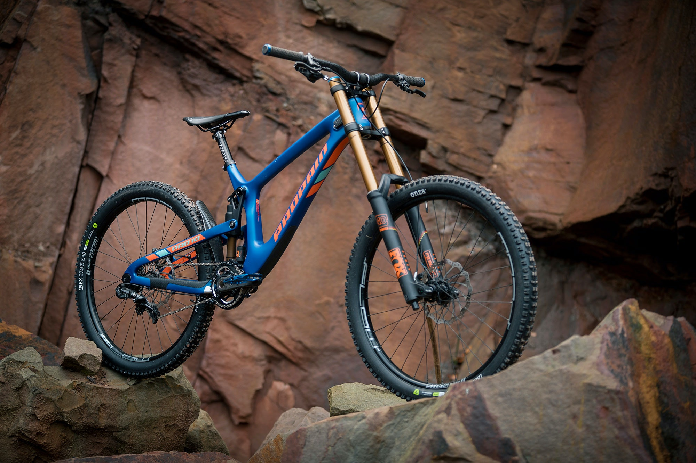
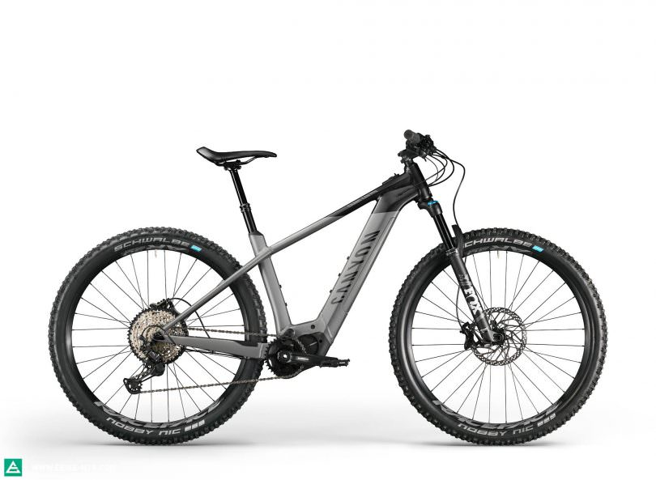

Mountain biking is a thrilling and challenging activity that involves riding a specialized bicycle designed
for off-road terrain like the Mountain Bike or MTB for short. Unlike road cycling, mountain biking takes place
on rugged trails, steep inclines, and uneven surfaces, requiring a combination of physical and technical skills.
Mountain biking can be enjoyed as a recreational activity, a form of exercise, or as a competitive sport. It is a
great way to explore nature, enjoy breathtaking scenery, and push your physical and mental limits. With different
types of bikes and trails to choose from, mountain biking can be adapted to different skill levels and preferences,
making it an accessible and rewarding activity for everyone.
There are also Different types of Mountain bikes like the following:
Cross Country (XC) Bike
Trail Bike
Enduro Bike
Downhill (DH) Bike
Fat Bike
Electric MTB
Scroll to see Pictures:
CROSS COUNTRY BIKE
TRAIL BIKE
ENDURO BIKE
DOWNHILL BIKE

FAT BIKE
ELECTRIC MTB
